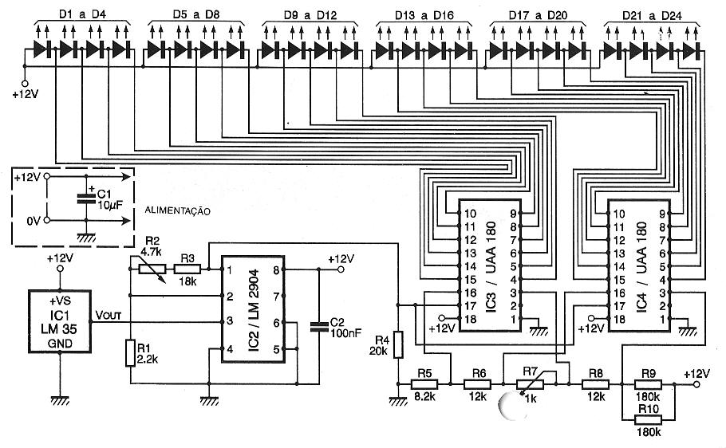

TERMOMETRO

El circuito LM35 es un transductor de temperatura-voltaje que proporciona en la salida (terminal Vout) una tensión de 10mV/ºC.
Un amplificador de funcionamiento monovoltaje (LM2904) le permite amplificar esto firmar.
Con los valores de resistencias adaptadas, tendremos a la salida del LM2904 (terminal 1) una tensión de 100mV/ºC.
El R2 ajustable le permite ajustar con precisión este voltaje y, por lo tanto, calibrar el termómetro.
Los circuitos integrados UAA180 están destinados al control de los 12 LEDs. El La colocación en serie de dos circuitos permitirá una visualización en 24 LED. El el voltaje de salida del LM2904, proporcional a la temperatura, se aplica al terminal 17 de los dos UAA180. Cuando este voltaje aumenta, los LED se encienden realizando progresivamente una banda ligera de longitud creciente.
Por debajo de un cierto voltaje no se enciende ningún LED. Por encima de un voltaje todos los LED están iluminados.
Las resistencias R4 a R10 se han dimensionado de manera que: - el paso de un LED para lo siguiente corresponde a 1°C; - el primer LED se enciende para un temperatura de 8°C; - el último LED se enciende hasta una temperatura de 31 ° C.
El R7 ajustable permite un paso coherente entre el último LED ordenado por el primer UAA180 (IC3) y el primer LED controlado por el segundo UAA180 (IC4).
El conjunto de montaje debe alimentarse con una tensión de 12 V (regulada) y consume como máximo (con todos los LEDs iluminados) 100mA.
Fabricación y ajuste
Se decidió separar el circuito en dos partes. Los 24 LEDs dispuestos en un arco de La circunferencia, por ejemplo, se cablea en un primer circuito impreso.
Un segundo circuito impreso contiene los demás elementos del conjunto (IC, resistencias, condensadores...). El conjunto se monta en una caja.
Con el sensor de temperatura en la carcasa, es esencial perforar agujeros en el ventilación, para evitar un error debido al calentamiento de los componentes y para Disminuir la inercia térmica.
Los ajustes son muy simples, consistiendo esencialmente en la calibración de la termómetro; Simplemente compare con la indicación de un termómetro de mercurio (si posible, precisión) y R2 regular para tener el mismo valor.
Reglamento de R2:
- eliminar IC2 de su soporte;
- aplicar a la entrada de la UAA180 (terminales 17) una tensión continua variable, aumentando progresivamente el de 0V. R7 regular para que el paso del 12° LED al 13° se realice en un de manera coherente.
Aquí está nuestro termómetro listo para trabajar tan pronto como se aplica a alimentación; te indicará la temperatura en tu habitación, dejando solo para montarla en un caja, sin olvidar la ventilación del LM35.